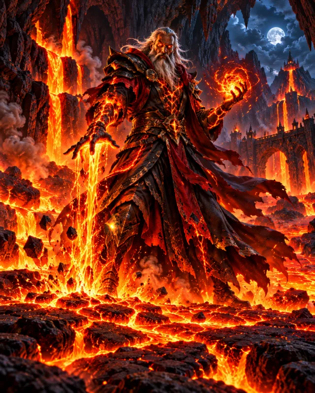
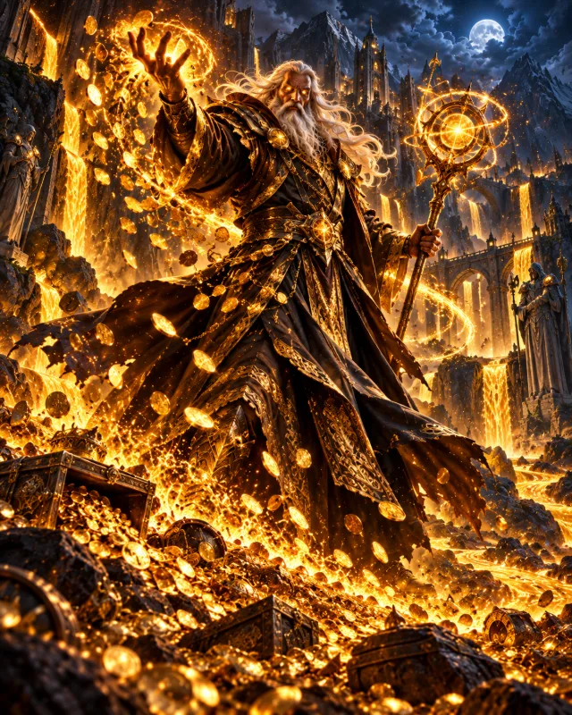

Guardian of the Last Light,
Hearken to this final plea, for fate has cast its die upon these sacred lands. I speak to you from the shadows of the High Temple, for we are in dire need of assistance.
The earth has hemorrhaged open, and from the Fiery Depths of the Abyssal Veins, an unholy heat rises. These molten gateways have sundered our soil, and now the roots of existence tremble beneath the demon march.
The sky turns to soot, and the sap of our Trees of Life boils in the veins of the earth. The realm stands upon the precipice of ruin; if the heartwood burns, all memory of our kin will be reduced to ash.
To ensure your defense holds firm, our Elder Mages have infused every quiver with ancient enchantments. These arrows are now bound to the very breath of the foe—curving their flight to relentlessly stalk every invader until their mark is found. Let the winds themselves guide your hand.
You must take up the mantle of Guardian. There is no time for hesitation. Fortify the paths lest we be overrun by the scorched legions of the pit.
Let the stone of your bastions stand against their flame. For the world, for the light, for survival.
Written in the soot of the falling realm,
— The High Elven Council

Guardian, I was once an elf of the High Temple, as fair as any you know. When the Abyssal Veins tore open, I did what no elf had dared - I walked into the realm of the very fiends that now march upon us.
I lived among their fires for longer than I care to remember. The pit took my youth and burned the elf out of me - but it taught me its magic. I took their enchanted magma and forged it into a spell of my own.
Point me to the road they march upon, and I shall turn it to molten stone beneath their feet. Let them taste the fire they brought upon our lands.
Guardian, I have studied the winds since before your towers had foundations. It was I who enchanted your arrows. Each one now carries the will of the wind and seeks its foe on its own - bend as the invader may, the arrow bends with it.
And when the horde grows thick, call upon me again. I will pour the storm into your bastions themselves, and for a while every tower you have raised shall shoot faster and strike harder than any mortal hand could make it.
But heed me - the storm is fickle, and it never stays for long.

Guardian, the fiends of the pit are not made of fire alone. Clawing their way up through the Abyssal Veins, they swallowed the deep gold of the underworld, and it still flows molten in their veins.
For forty years I sought the formula to draw it out. Now I have it. Speak my charm, and when a demon falls, its dying embers cool into coin - twice the gold it would have left behind.
Spend it wisely, Guardian. Towers do not raise themselves, and my alchemy is slow to brew again.
Guardian, I come from the frozen peaks of the north, where no fire has ever burned. The pit's legions are made of flame - and flame fears only one thing.
Mark the road, and I will call down a blizzard so fierce that the very ground freezes. Within my storm their burning march slows to a crawl, and the frost cracks their molten hides like glass.
Strike them while they are frozen - every blow will cut deeper, be it arrow or lava.
Thus speak the Elder Mages.
Go now, Guardian - the Trees of Life are waiting.